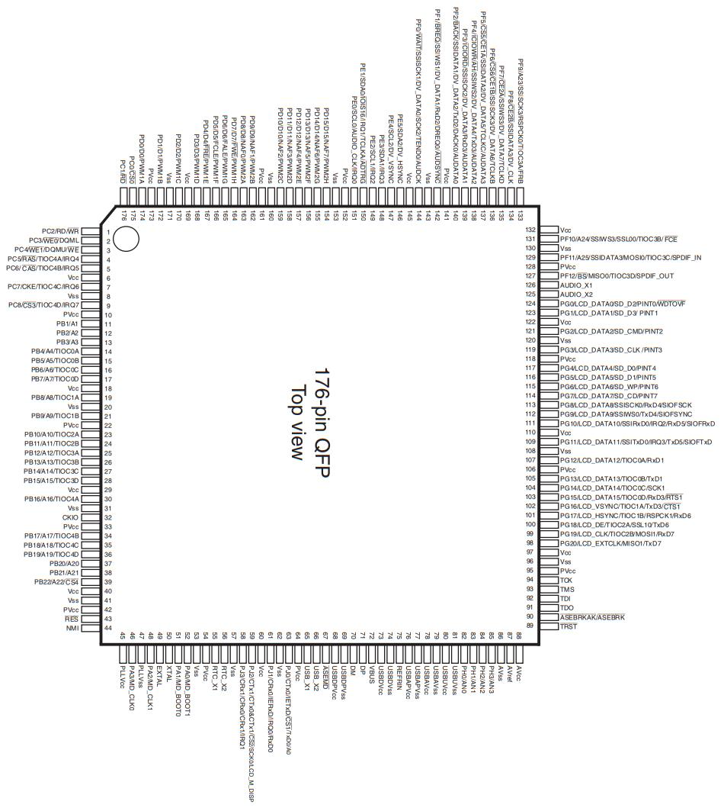

В синтезаторе Yamaha E-473 используется микропроцессор SWX03S. Обозначение в документации Yamaha - SCC105A, раrt. N: YK611A0. Внутренняя частота 135.4752MHz. Внешний тактовый генератор на 67.7376MHz. Предположительная архитектура - SuperH SH-2 RISC.
Что есть про этот микропроцессор в интернете?
Официальная документация
Руководство программиста SH-2 (англ. SuperH SH-2 Programming Manual):
Говорят, что есть в архивах Renesas (Product Selector: RH850 Automotive MCUs, Product Selector: RX 32-Bit Performance / Efficiency MCUs). Там должны быть описаны регистры, инструкции и тайминги. По факту упоминаний архитектуры SuperH или SH-2 не найдено. Однако, по косвенным признакам, аналогичную архитектуру могут иметь чипы SH7264 или SH7262.
Набор Starter Kit с чипом SH7264 выглядит так:
Документация для чипов SH7264 и SH7262 общая.
Ссылка на документацию: https://www.renesas.com/en/document/mah/sh7262-group-sh7264-group-users-manual-hardware?queryID=ae099f5a0d5a9fd664aff564a76d0027
Еще больше официальных документов вот по этой ссылке: https://www.renesas.com/en/products/microcontrollers-microprocessors/other-mcus-mpus/superh-risc-engine-family-mcus/sh7262-32-bit-microcontrollers?queryID=ae099f5a0d5a9fd664aff564a76d0027#documents
Ножки микросхем
По ножкам: у SWX03S (SCC105A) имеется 176 выводов. У серии SH7262/SH7264 следующее кол-во ножек:
SH7262 1Mb version - 176 ножек
SH7262 640Kb version - 176 ножек
SH7264 1Mb version - 208 ножек
SH7264 640Kb version - 208 ножек
Очень точное соответствие с SH7262! Весьма возможно, что SWX03S - это перелицованый SH7262.
Теперь можно сравнить картинки с даташитов.
Это микросхема SWX03S

Это микросхема SH7262
Как видно, совпадений по ножкам нет. Совпадает только общее количество. Нужно составить таблицы для одного и второго чипа, и попытаться найти соответствия. Если сигналы просто перекоммутированы на другие выводы, это можно заметить. Надо разбираться дальше.
Согласно даташиту на SH7262, его ножки могут выполнять 4 функции. И таблица обозначения ножек содержит 4 столбца. Надо разбираться, что значат эти функции.
Ошибки в официальной документации
В документе User's Manual: Hardware Renesas 32-Bit RISC Microcomputer SuperH RISC engine Family / SH7260 Series, файл REN_r01uh0134ej0400_sh7262_MAH_20140926.pdf (ссылка на него дана выше) на стр. 11 раздела 1, написано следующее:
SH7262
176-pin QFP, 24-mm square, 0.5-mm pitch
JEITA package code: P-LQFP176-24 x 24-0.50
Renesas code: PLQP0176KB-A
SH7264
208-pin QFP, 28-mm square, 0.5-mm pitch
JEITA package code: P-LQFP208-28 x 28-0.50
Renesas code: PLQP0208KB-A
Т. е. у SH7262 имеется 176 ножек, а у SH7264 - 208. В то же время в соседнем документе SuperH platform brochure 32-bit RISC Microcontrollers (файл REN_R01CL0014ED0200_FLY_20121015.pdf), в котором даются рекомендации выбора процессора, имеется таблица:
И здесь уже наоборот: для 7262 указано 208 ножек, а для 7264 - 176 ножек. Непонятно кому верить.
Характеристики процессора
В любом случае, теперь становится ясно, что в SH7262/7264 используется ядро архитектуры SH2A со встроенным сопроцессором для работы с плавающей точкой (FPU).
Почему инженеры Yamaha выбрали именно этот процессор?
Вот что про данный процессор написано в рекламных материалах:
Основные преимущества контроллеров SuperH без встроенного ПЗУ
Скорость
Ядро SH-2A является суперскалярным. Это означает, что оно может выполнять две команды за один такт. Оно обеспечивает производительность до 630 DMIPS.
Работа с экранами
Семейство контроллеров SuperH оснащено несколькими периферийными устройствами для управления TFT-экранами и поддерживается широким спектром программного обеспечения для поддержки этой функциональности. Включая встроенный SRAM объемом до 2,5 МБ.
Возможность масштабирования
Являясь основой платформы SuperH, семейство SHC-ROMless позволяет значительно расширить возможности за счет процессора SuperH, а также снизить стоимость и функциональность за счет контроллеров SuperH со встроенной флэш-памятью.
Связь
Семейство SuperH предлагает все возможности подключения, которые только можно пожелать для высокопроизводительных процессоров, включая CAN, USB и Ethernet. Семейство контроллеров SuperH без встроенного интерфейса ROM обладает всеми функциями подключения, необходимыми для широкого спектра приложений и областей применения.
Интеграция
Семейство контроллеров SH Romless также включает устройства со встроенной ОЗУ объемом до 2,5 МБ, что означает, что вы можете заменить внешнюю оперативную память и видеобуфер на эту внутреннюю оперативную память. Кроме того, поскольку эти устройства могут запускать код из этой внутренней оперативной памяти, внешняя флэш-память NOR может быть заменена более дешевой последовательной флэш-памятью. Это может обеспечить значительную экономию затрат на спецификацию.
Открытые проекты и эмуляторы
GNU Binutils (GAS, objdump):
— Поддерживает ассемблер и дизассемблирование SH-2.
— Исходный код в репозиториях GCC (GitHub).
(см. ниже про sh-elf)
Эмулятор MAME:
— Реализует SH-2 для аркадных автоматов (например, Sega Saturn).
— Код CPU-ядра: mame/src/devices/cpu/sh/sh2.cpp.
Проект QEMU:
— Частичная эмуляция SH-2 (менее точная, чем MAME).
Если нужно дизассемблировать код
Могут помочь утилиты пакета sh-elf-*:
Имеется утилита sh-elf-objdump (из пакета GNU Tools for SuperH). Где sh - это не сокращение от shell, а название архитектуры. Взять его можно с https://github.com/andwn/sh-gcc-toolchain. Этот проект представляет собой просто один Makefile. При его сборке командой make, выкачиваются различные архивы с каких-то зеркал, на которых лежат исходники для Hitachi SuperH-2. После сборки, файлы устанавливаются либо традиционной командой sudo make install, либо через checkinstall -D (для Debian-подобных дистрибутивов).
Чтобы установка через checkinstall -D нормально сработала, перед запуском команды надо создать каталог /opt/toolchains, такая особенность заложена в Makefile.
А так же при запуске checkinstall -D необходимо изменить номер версии Version (пункт 3) со строки toolchain на что-нибудь типа 1.0.0, иначе пакет не будет создан.
После этого, становится доступна программа sh-elf-objdump. Она находится в каталоге /opt/toolchains/sh-elf/bin. Его надо прописать в переменную PATH. Так как все исполнимые файлы в этом каталоге начинаются на "sh-elf-*", они не будут перекрывать никакие другие системные инструменты.
Пример запуска:
sh-elf-objdump -D -b binary -m sh2 firmware.bin
Какие архитектуры будут доступны sh-elf-objdump --help:
sh-elf-objdump: поддерживаемые цели:
elf32-sh elf32-shl
coff-sh coff-shl coff-sh-small coff-shl-small
elf32-little elf32-big
srec symbolsrec
verilog tekhex binary ihex plugin
sh-elf-objdump: поддерживаемые архитектуры:
sh sh2 sh2e sh-dsp sh3 sh3-nommu sh3-dsp sh3e sh4 sh4a sh4al-dsp sh4-nofpu sh4-nommu-nofpu sh4a-nofpu sh2a sh2a-nofpu sh2a-nofpu-or-sh4-nommu-nofpu sh2a-nofpu-or-sh3-nommu sh2a-or-sh4 sh2a-or-sh3e
Так же могут помочь интерактивные дизассемблеры:
— Radare2/Ghidra с поддержкой SH-2. В Ghidra v. 11.3.1 точно есть поддержка архитектур SuperH и SuperH4. Поэтому непонятно, входит ли SH-2 в архитектуры SuperH и SuperH4. Похоже, все-таки SH-2 должна поддерживаться, ибо в каталоге /opt/ghidra_11.3.1_PUBLIC/Ghidra/Processors/SuperH/data/languages лежат файлы:
sh-1.sla
sh-1.slaspec
sh-2a.sla
sh-2a.slaspec
sh-2.sla
sh-2.slaspec
superh2a.cspec
superh.cspec
superh.ldefs
superh.pspec
superh.sinc